Weapons Arsenal
Weapons are your primary tools for surviving endless zombie waves in Hunty Zombie. Developed by HZ DEV, this popular Roblox wave survival game has over 163 million visits and features 4 weapon rarity tiers. Each weapon has 3 basic abilities (Z, X, C keys) that charge over time, plus an ultimate ability (G key). Pro Tip: Unlock the second weapon slot for $50,000 to switch weapons during waves using keys 1-2.
Weapon Rarities & Examples
| Rarity | Weapon | Type | Description |
|---|---|---|---|
| Rare | 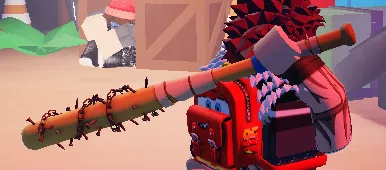Baseball | Melee | A sturdy bat reliable for knocking down zombie skulls when things get too close |
| Epic | 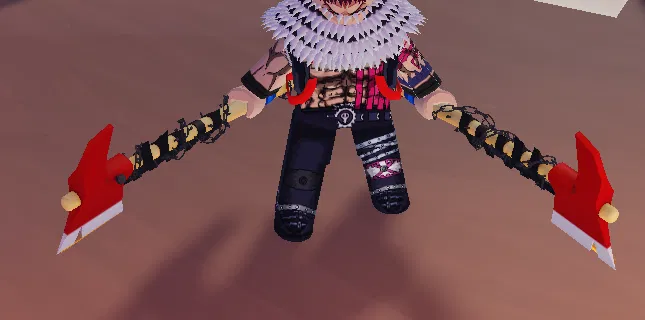Axes | Melee | A trusty pair of axes great for clearing paths and keeping zombies at a safe distance |
| Legendary |  Guitar Guitar |
Melee | Unleash sonic attacks to damage multiple enemies with style |
| Legendary |  Dual Gun Dual Gun |
Ranged | Two guns, twice the firepower. Clear out crowds with speed and precision |
| Mythic |  Katana Katana |
Melee | A blade forged for legends. Slices through hordes silent, swift and deadly |
| Mythic | 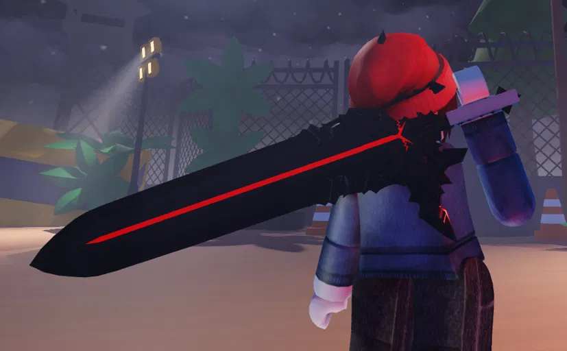Greatsword | Melee | A massive red blade, each swing crushes through zombies with overwhelming power |
| Mythic | Scythe | Melee | META WEAPON: Purchase for $1,000,000 at Level 10+ from merchant. Insane AoE damage with enemy stagger |
| Mythic | Dagger | Melee | UPDATE 2 WEAPON: Dual-wield daggers obtained through lobby quests. Top-tier with Umbral Pierce ability |
How to Obtain Weapons
Weapons are obtained through the Gacha system (press J to open). Normal Spins cost $3,000 each, while Lucky Spins (obtained from codes and daily rewards) significantly increase your chances of getting Legendary and Mythic weapons.
Current Meta (UPDATE 2): Greatsword, Scythe, and Dagger are the top-tier weapons with excellent AoE damage and stagger capabilities. Pair any of these with Prodigy trait, Vampire perk, and Dragon/Raven pets for optimal wave farming.
Perks & Abilities
Perks are special abilities that enhance your performance in combat. Activate your equipped perk by pressing 'E' after charging it up through zombie kills. Each perk provides unique advantages, from damage boosts to healing effects.
Available Perks
| Perk | Rarity | Drop Rate | Effect |
|---|---|---|---|
| Berserk | Rare | 60% | Temporarily increase attack power for 20 seconds |
| Healer | Epic | 15% | Slowly restore health over time during intense fights |
| Flame | Epic | 15% | Attacks set zombies on fire, dealing damage over time |
| Critical | Legendary | 4% | 60 seconds of increased damage - excellent for burst damage phases |
| Undead | Legendary | 4% | Movement speed boost + reduced cooldowns for better mobility |
| Vampire | Mythic | 1% | S-TIER META: Life steal + speed boost + DoT - best for survivability |
Lucky Spin Rates: When using Lucky Spins, Epic perks increase from 30% to 60%, Legendary from 4% to 30%, and Mythic from 1% to 10%.
Pet System
Pets provide valuable passive bonuses that can significantly impact your survival chances. You can equip up to 2 pets simultaneously, allowing for strategic combinations based on your playstyle.
Meta Recommendation: Dragon for damage output, Raven for farming efficiency. These are the top choices for experienced players pushing high waves.
Lucky Pet Pack ($20,000)
| Pet | Drop Rate | Passive Effects |
|---|---|---|
| 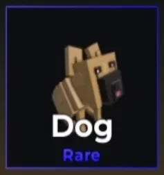Dog | 60% | Keep dropped items |
| 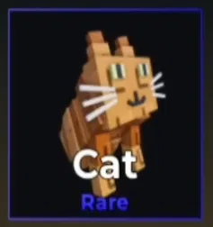Cat | 30% | Keep dropped items + 1% Drop Chance |
| 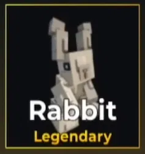Rabbit | 9% | +2% Drop Chance + 5% Player HP |
| 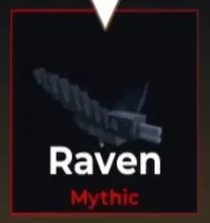Raven | 1% | META: +30% Drop Chance - Best for farming |
Legendary Pet Pack ($30,000)
| Pet | Drop Rate | Passive Effects |
|---|---|---|
| 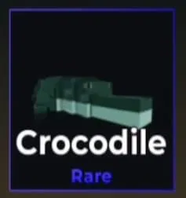Crocodile | 35% | +5% Walk Speed |
| 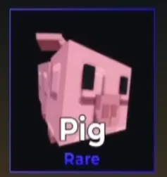Pig | 35% | +10% Player HP |
 Goat Goat |
15% | +5% Walk Speed + 10% Player HP |
| 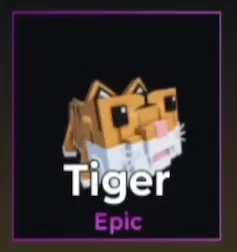Tiger | 10% | +5% chance to inflict Bleed when attacking |
| 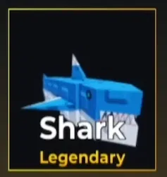Shark | 4% | 10% chance to activate Regen when attacked |
| 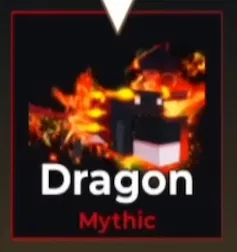Dragon | 1% | META: +20% Burn chance + 10% Drop chance - Best for damage |
Duplicate Refunds: Lucky Pack duplicates refund $6,000, Legendary Pack duplicates refund $9,000.
Weapon Traits
Traits are powerful enhancements that can be applied to weapons. Each weapon can only have one trait at a time. Use Trait Crystals at the Trait NPC in the lobby to reroll traits on your weapons.
All Available Traits
| Trait | Chance | Effect |
|---|---|---|
| Power I | 12% | Increase Damage by 5% |
| Power II | 8% | Increase Damage by 10% |
| Power III | 4% | Increase Damage by 15% |
| Agility I | 12% | Increase Attack Speed by 2% |
| Agility II | 8% | Increase Attack Speed by 4% |
| Agility III | 4% | Increase Attack Speed by 6% |
| Focus I | 12% | Increase Skill Damage by 5% |
| Focus II | 8% | Increase Skill Damage by 10% |
| Focus III | 4% | Increase Skill Damage by 15% |
| Intelligent | 4% | Gain +10% EXP when killing enemies |
| Fortune | 4% | +20% chance to drop gold when killing zombies |
| Beast | 2.5% | +10% Damage and +2% Attack Speed |
| Prodigy | 1.5% | END-GAME META: +15% Damage, +6% Attack Speed, +15% Skill Damage, movement speed boost. The only viable end-game trait - doubles the stats of any other trait! |
Obtaining Trait Crystals: Trait Crystals can drop from enemies when clearing stages, from completing secret quests, or by purchasing them with Robux in the Shop.
Secret Quests: Visit the unmarked NPC to the left of the Weapons NPC in the lobby. Quests refresh every 24 hours and typically require zombie kills or rounds survived for Trait Crystal rewards.
Zombie Types
Hunty Zombie features various types of undead enemies with unique behaviors and attack patterns. The game's wave-based progression system scales enemy difficulty, health, and spawn rates as you advance through rounds.
Common Enemy Types
| Type | Danger Level | Description | Counter Strategy |
|---|---|---|---|
| Regular Zombies | Low | Standard enemies that appear in every wave | Basic attacks are effective |
| TNT Zombies | High | Explosive zombies that detonate on contact | Always dodge to avoid instant death |
| Athletic Zombies | Medium | Fast zombies that throw basketballs from range | Close distance quickly or use ranged weapons |
Wave Progression System
Each map features progressive waves with scaling difficulty. Enemy health, damage, and spawn rates increase with each wave. Pro Strategy: Save your ultimate abilities (G key) and charged perks (E key) for later waves when zombie density peaks. Death resets your current wave progress but you retain all permanent upgrades, coins, and weapon unlocks.
Maps & Arenas
Hunty Zombie features multiple well-crafted arenas where players battle against zombie hordes. Each map offers unique layouts, challenges, and strategic opportunities. The map pool is updated frequently with new arenas and special event maps.
Difficulty Modes
| Mode | Recommended For | Enemy Scaling | Rewards |
|---|---|---|---|
| Normal | Beginners learning basics | Standard enemy stats | Basic rewards |
| Hard | Experienced players | +50% enemy health/damage | Enhanced rewards |
| Nightmare | Expert players seeking challenge | +100% enemy stats, faster spawns | Best rewards, exclusive items |
Game Modes
- Solo Play: Test your skills alone against the zombie hordes (1 player)
- Co-op Mode: Team up with up to 6 players for coordinated survival
- Private Servers: Practice with custom settings and friends-only lobbies
- Infinite Mode: Push your limits against endless escalating waves
Current Meta Strategy (UPDATE 2): The top weapons are Greatsword, Scythe, and Dagger - all with excellent AoE damage and stagger capabilities. Apply Prodigy trait to your weapon, use Vampire perk for survivability, and equip Dragon (damage) + Raven (farming) pets. In co-op mode, coordinate ability usage and revive fallen teammates quickly. Complete secret quests for trait crystals.